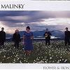

Celtic Lyrics Corner > Artists & Groups > Malinky > Flower & Iron > The Road Tae Drumleman
|  | The Road Tae Drumleman |
| Credits : | Willie Mitchell & Tony Cuffe |
| Appears On : | Flower & Iron |
| Language : | Scots-English |
Lyrics :
Oh the springtime returns tae the Laggan again
And the lark sweetly sings ower the green fertle plain
I'll tak' the road that is dearest to me
The road tae Drumleman that winds tae the sea
For I've made many friends there on every green mile
And the folks always greet me with a wave and a smile
If I spend all my days here, it's happy I'll be
On the road tae Drumleman that winds tae the sea
For we've sat 'roond the fireside when the winter wind blew
And we've laughed and we've sang 'til the night was weel through
And we've had a good dram and a wee cup o' tea
On the road tae Drumleman that winds tae the sea
And the lang summer days when we've tramped the hills ower
Tae spend hoors at the Eenans on Creggan's wild shore
And the soft summer twilight made shadows tae flee
On the road tae Drumleman that winds tae the sea
Oh these days passin' swiftly bring changes, I know
And as time marches on from this place we must go
But I'll ever remember while the heart beats in me
The road tae Drumleman that winds tae the sea
So the springtime returns tae the Laggan again
And the lark sweetly sings ower the green fertle plain
I'll tak' the road that is dearest to me
The road tae Drumleman that winds tae the sea